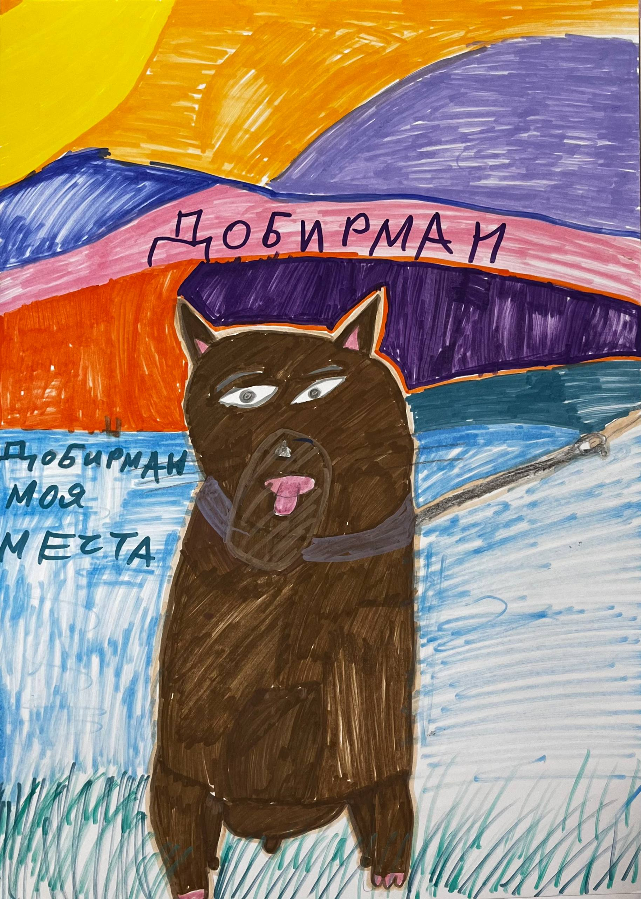

← назад к историям

Егорова Мария
"Доберман"
Моя мечта это Доберман, потому что я с самого детства мечтала о Добермане. Доберман это умная собака. Я постоянно видела в тиктоке, как надо уши перематывать. Вот это вот все.